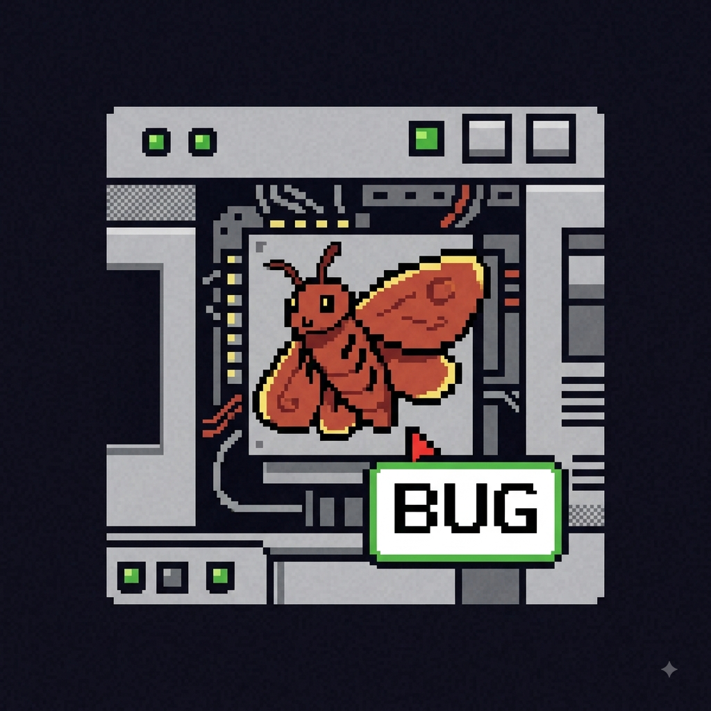
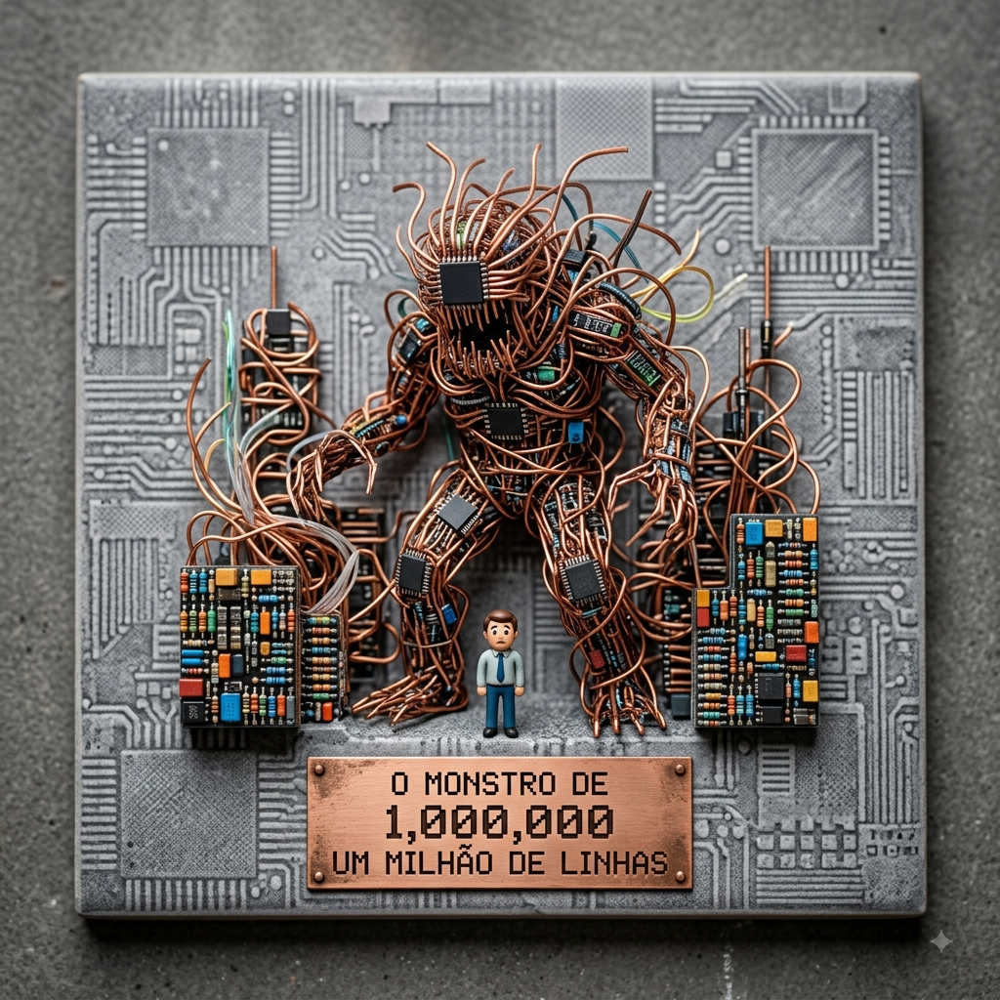
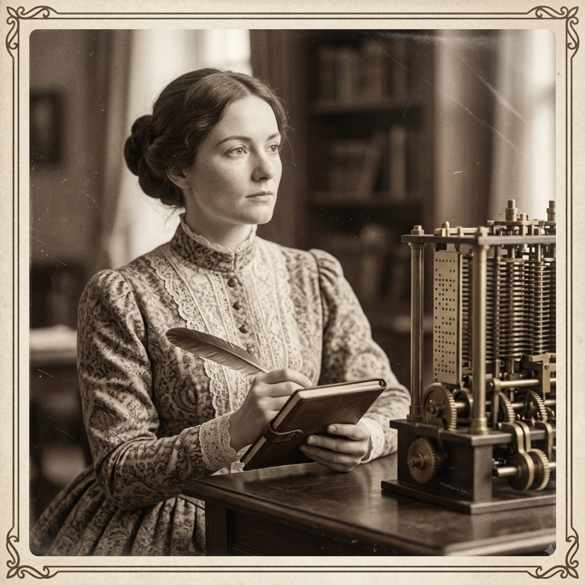
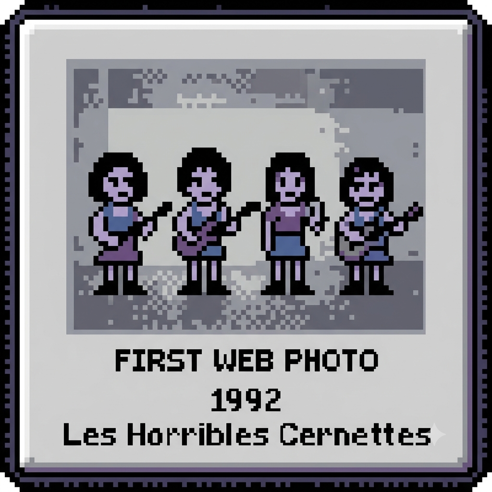

Meu primeiro post
Por: Eloan Augusto
Boas-vindas ao meu novo blog! Aqui vou compartilhar dicas de programação e curiosidades da área de tecnologia.
Conhecimentos, programação e curiosidades do mundo da tecnologia.
📚 0 artigos publicados
Sistema online
Por: Eloan Augusto
Boas-vindas ao meu novo blog! Aqui vou compartilhar dicas de programação e curiosidades da área de tecnologia.

Por: Eloan Augusto
A palavra "bug" passou a indicar erros de programação depois que uma mariposa de verdade travou o computador Harvard Mark II, em 1947!
Fonte: Smithsonian National Museum of American History

Por: Eloan Augusto
O sistema operacional Windows 10 tem cerca de 50 milhões de linhas de código! Imagine o trabalho para encontrar um erro ali!
Fonte: Microsoft

Por: Eloan Augusto
Ada Lovelace escreveu o primeiro algoritmo para a Máquina Analítica de Charles Babbage no século XIX!
Fonte: Scientific Memoirs

Por: Eloan Augusto
A primeira foto postada na internet, em 1992, foi do Les Horribles Cernettes, um grupo musical formado por funcionárias do CERN. Tim Berners-Lee, o criador da World Wide Web, usou a imagem para testar o envio de fotos pela rede.
Fonte: CERN Document Server